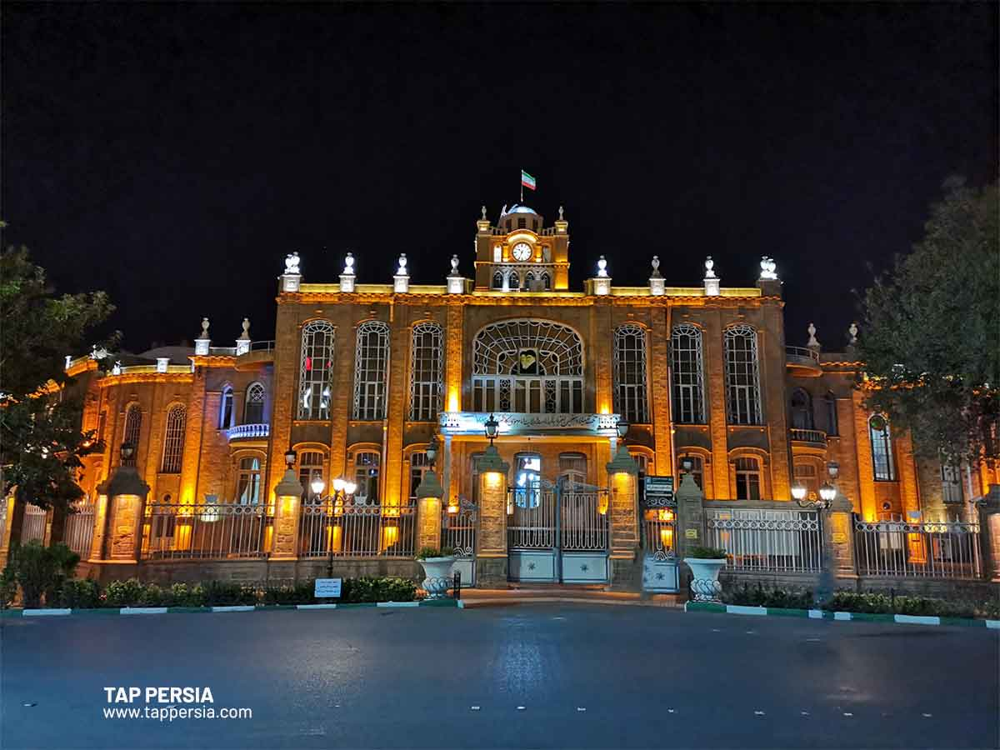

Photo Gallery


A city of ancient wonders, breathtaking landscapes, and a rich cultural heritage.
Explore MoreTabriz is one of the most historical and culturally significant cities in Iran, known for its beautiful architecture, vibrant bazaars, and friendly people.
Tabriz has been a hub for trade and culture for centuries, playing a vital role in the Silk Road and the development of Iran. It is home to many historical monuments such as the Blue Mosque, the Grand Bazaar, and El-Gölü Park.